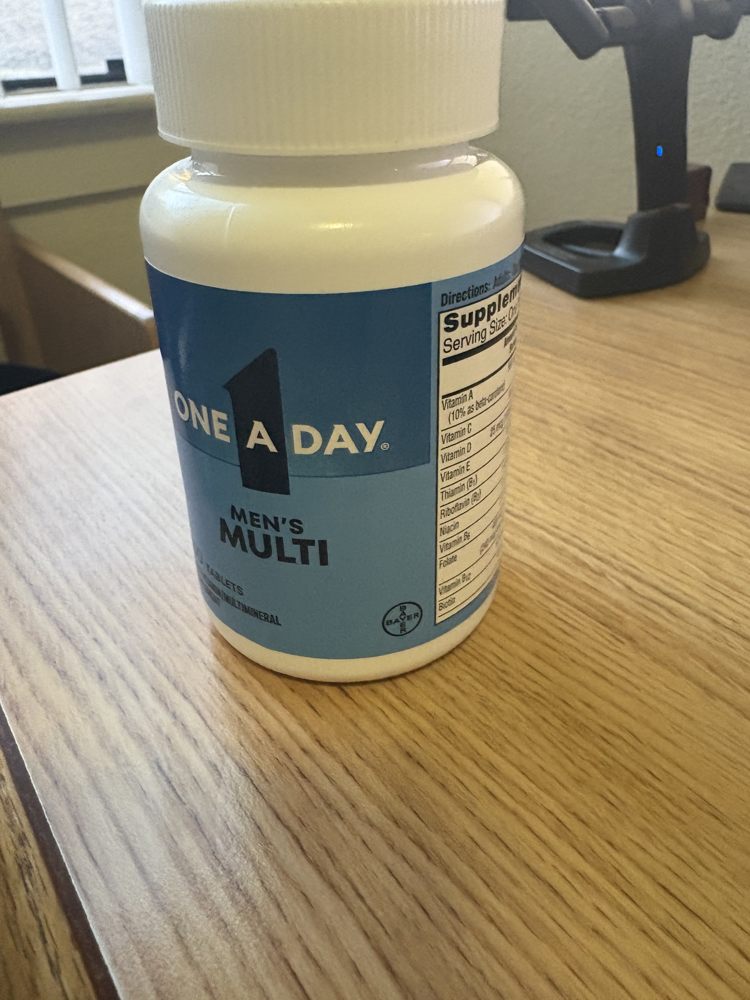

01 / MATCH THE OUTPUT
Which stage produced it?
A detector finds a region. OCR reads the characters. Match these two outputs to the stage that produces them.
READING THE LABEL / PRACTICE
Four OCR challenges, then a hands-on annotation exercise. Check each answer to see why it works.
Allow about 5–8 minutes. This is a learning activity, not a graded assessment. Answers stay on this page and are not submitted or stored.
← Return to the tutorial01 / MATCH THE OUTPUT
A detector finds a region. OCR reads the characters. Match these two outputs to the stage that produces them.
02 / CORRECT THE TEXT
For this illustrative example, the reference label reads ONE A DAY, but OCR returned 0NE A DAY. Correct the transcription below.
This simulated character error is a teaching example, not measured output from the app.
03 / PUT THE STEPS IN ORDER
Use the up and down buttons to arrange the steps for the detector-assisted OCR pipeline in this tutorial.
04 / MEASURE THE ERROR
The reference is FRITOS. A simulated OCR result is FRIT0S. There is one substitution, no insertion, and no deletion.
CER = (substitutions + deletions + insertions) / reference characters × 100
Round to one decimal place. CER measures text errors; detection mAP measures bounding-box predictions.
05 / DRAW A BOUNDING BOX
Draw a tight rectangle around the words ONE A DAY. Include the entire name and leave out “MEN’S MULTI” and the rest of the bottle.
Drag across the photo with a mouse, pen, or finger. You can redraw at any time. For keyboard use, enter the box’s position and size below.

phone_IMG_3542.jpg. The reference comes from its saved manual annotation. Orange is your box; green is the reference after checking.Values are percentages of the photo’s width or height. X and Y locate the top-left corner.
No box drawn yet.
Intersection over union (IoU) divides the area shared by your box and the manual reference by the area covered by either box. This exercise accepts an IoU of at least 0.50. A lower score may mean you clipped the text, included too much background, or chose a different region. The annotation is a project reference, not a unique perfect answer.
A good crop preserves the name, OCR can still misread characters, and each stage needs its own evaluation.
Check all five activities for a final recap. You can retry any answer.
Continue to references ↗